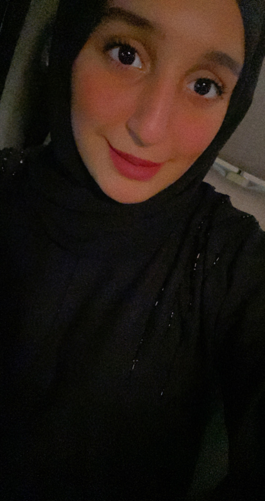
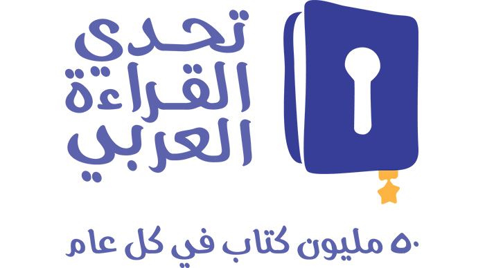
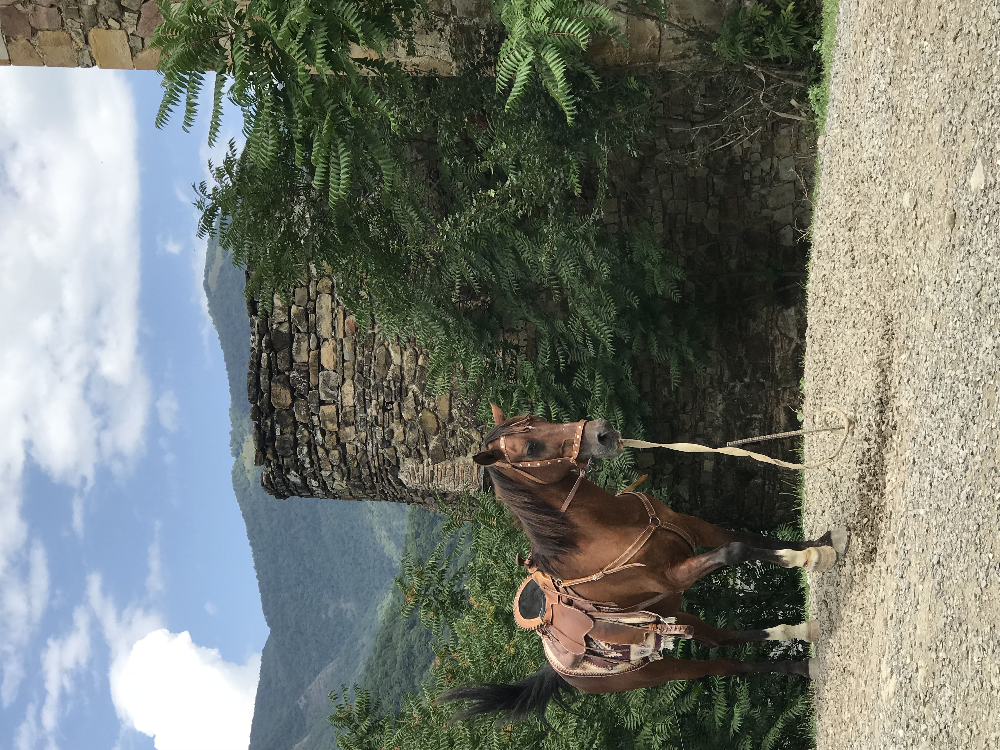
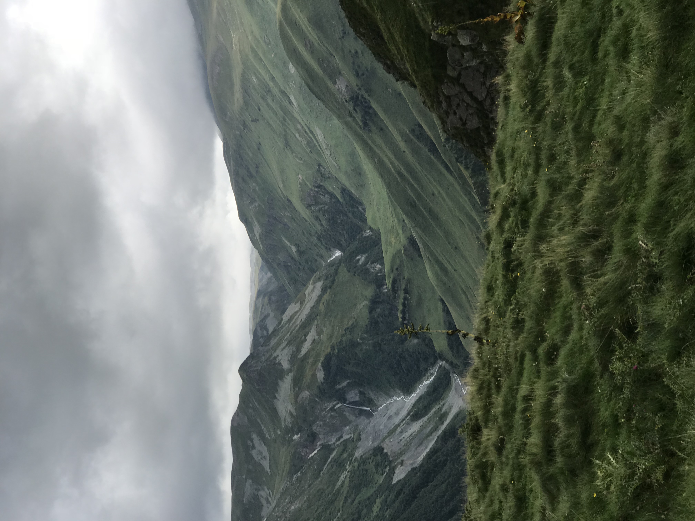
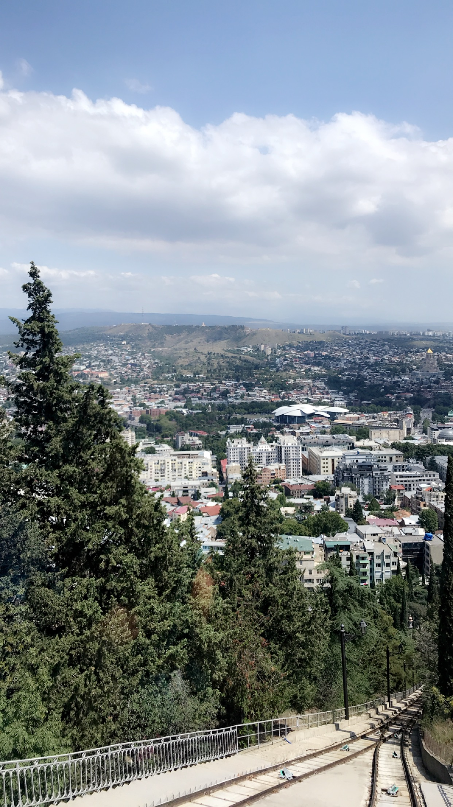

About me
I am Maitha, studying at the University of Sharjah, majoring in IT Multimedia, and I am in the second year. I am the fifth of my brothers and sisters, and I was born in Sharjah in Al Qasimi Hospital on 5/28/2001. Since I was in high school and I aspire to get into the computer field because I love technology, especially computers, so when I graduated and got a scholarship from the Sharjah Water and Electricity Authority, I entered the University of Sharjah and majored in IT Multimedia.
Alhamdullah so far I am diligent in my studies and I aspire to a lot, of course, and I want to raise my mother's and my father's head, by graduating from this distinguished university always and always first in my opinion.




Everyone has different hobbies. My hobbies are swimming, as I like playing video games and I love programming, and Inshaullah when I graduate I will work in the field of programming. I also love reading, and in 2016 (Year of Reading) I entered the (Arab Reading Challenge) competition, but I did not complete it for personal reasons.
Every person wants to travel to the country he loves, but not many will be able to do that for many reasons, and I am one of them. I want to travel to all parts of the world, especially countries with attractive nature, because I love nature so much. I have traveled the most to Qatar because there is my aunt (my mother’s sister) who lives and we used to visit her all from time to time, and at the same time the trip was like tourism. My travels to the Gulf countries, but after a long time I traveled as a tourist to Georgia and it was full of picturesque nature and I took many pictures of the wonderful nature and tranquility of Georgia.


